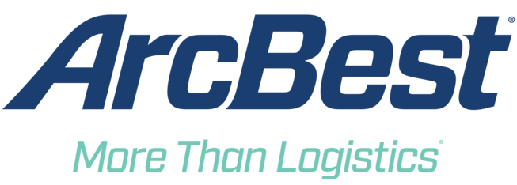

About Me
I grew up on the east coast and currently live in Oklahoma City, the perfect location for one of my hobbies - storm spotting. I recieved a degree in both Computer Science and Broadcast Journalism from Harding University, which gave me a solid foundation in problem solving and communication. I've been imroving my technical skills while contributing as a Software Engineer for the past 4 years.
Career

In 2022 I joined the GitHub team, where I've had the opportunity to contribute to exciting projects that are making the world a better place. I've learned Ruby on Rails and Go and to further develop my skills at designing scalable software.

I began my career as an intern and then full time Software Developer at ArcBest Technologies, where I used C# and SQL Server to help reinvent tracking operations for several areas of the company. I also developed ArcBest's first production Kafka integration to improve application scale.
Video Projects
Over the past few years, I've completed a number of event video projects for people - graduation ceremonies, theater productions, and more. While I'm currently retired from professional video production, if you're looking to view or download one of these projects, don't hesitate to reach out and I'll be happy to provide a link!